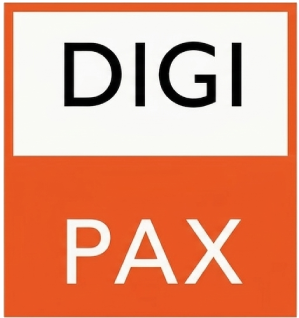
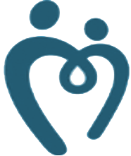

Навигатор
врача-фтизиатра
Система доступа к профессиональным ресурсам
1С-МИС

DIGIPAX
ФРБТ
Мединфо

Доноры
1
Стандартизация во фтизиатрии
⌄
Клинические рекомендации
→
Все клинические рекомендации
→
Туберкулез у взрослых
→
Туберкулез у детей
→
Материалы РОФ
Справочники, ЛТИ и др.
→
Иммунодиагностика (МО, 2025)
⌄
Нормативно-правовая база
→
Приказы МОКПТД
→
Нормативы работы службы
→
Раннее выявление туберкулёза
→
Федеральные документы
→
Гид по работе врача-фтизиатра
→
Бланки
Шаблоны и образцы
⌄
Контрольные листы
→
Ведение медкарты
Письмо от 29.07.2025
→
Организация помощи в тубкабинетах
2
Мониторинг, анализ и безопасность
→
Классификация и регистрация НПР
⌄
Мониторинг НПР
→
Лабораторный мониторинг
→
Оценка жалоб
→
По режиму и фазе ХТ
→
Шкала Наранжо
→
Приложения к КР (Excel)
3
Справочник
⌄
Справочники ЛС
→
РЛС
→
ВИДАЛЬ
→
Калькулятор СКФ
→
Калькулятор дозировок
→
Взаимодействия ЛС
4
Информация для пациентов
→
Справочник пациента
Памятки, ответы на вопросы
→
QR-код на справочник
→
Архив материалов
5
Дополнительные ресурсы
→
Папка ТМК
⌄
ВКС
→
Труконф с МОКПТД
→
Телемедицина
⌄
Проверка полиса ОМС
→
МОФОМС
6
Образовательные ресурсы
⌄
Вебинары НМИЦ ФПИ
→
Вебинары 2026
→
Вебинары 2025
→
Архив
→
Российское общество фтизиатров
→
НМИЦ ФПИ
→
Туберкулез и болезни легких
⌄
Международные ресурсы
ВОЗ по туберкулёзу
CDC (США)
ECDC
PubMed
Lancet Resp. Medicine
Stop TB Partnership
The Union